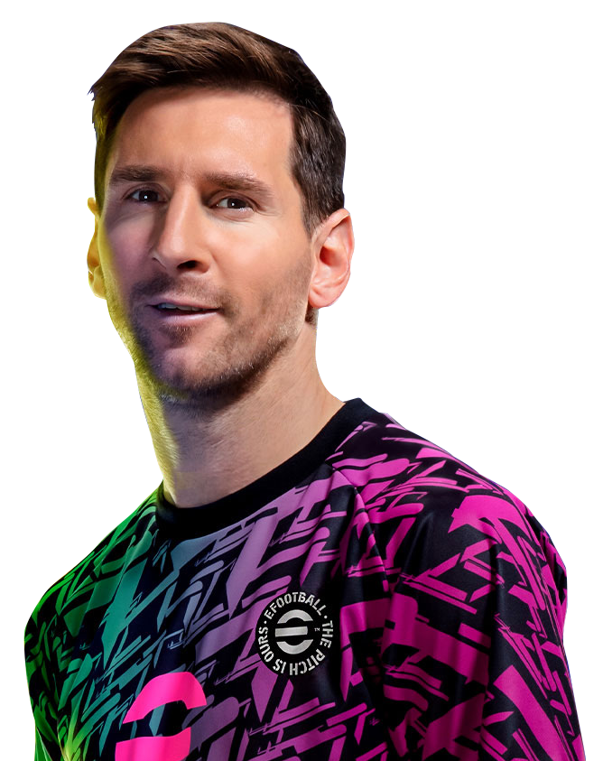
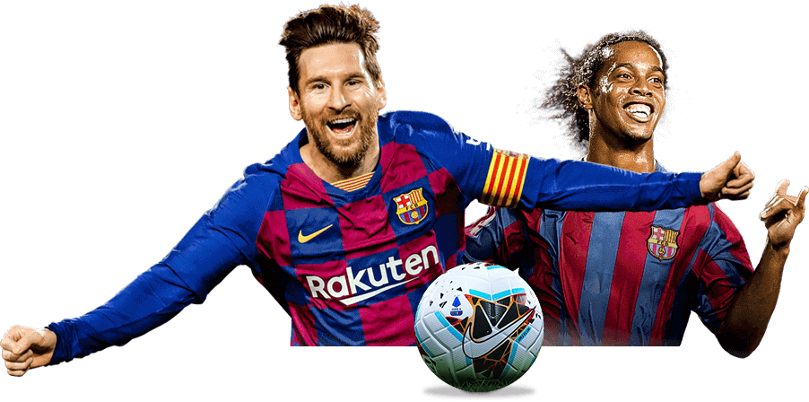
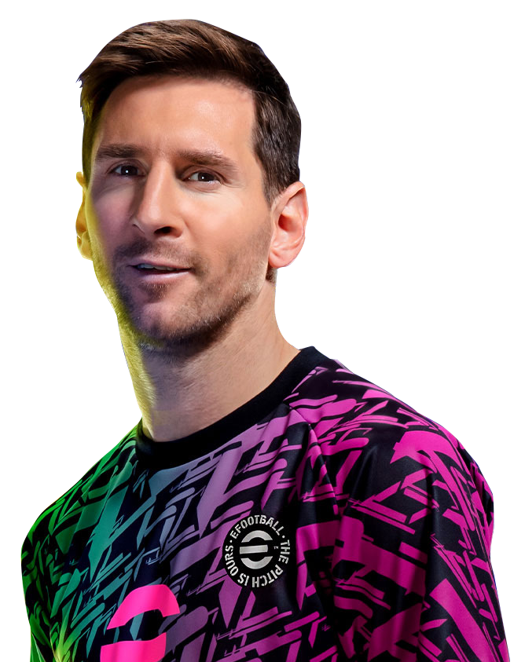
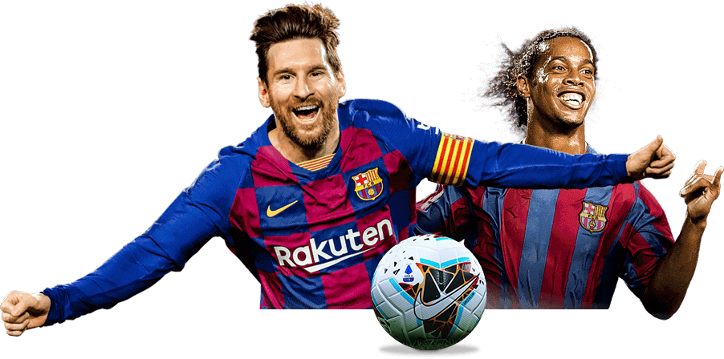

O que é eFootball?
eFootball é um jogo de futebol digital desenvolvido pela Konami, que substituiu a antiga franquia Pro Evolution Soccer (PES). Lançado em 2021, eFootball se destaca por ser uma plataforma free-to-play (gratuita para jogar), com atualizações constantes e foco na experiência online. Ele oferece uma simulação de futebol realista, onde os jogadores podem montar seus próprios times, disputar partidas online e participar de eventos semanais.
A Konami transformou o modelo tradicional de lançamento anual em um serviço contínuo, oferecendo novos conteúdos sazonais em vez de lançar novas versões todo ano. A proposta é manter o jogo sempre atualizado com base no futebol real, agregando valor para fãs do esporte em todo o mundo.
Fonte: Konami
Como Funciona?
eFootball utiliza tecnologias avançadas de gráficos e física, com motor gráfico Unreal Engine 4, para proporcionar uma experiência de jogo mais fluida e visualmente realista. Os modos principais se baseiam em partidas online, como o Dream Team, onde os jogadores podem contratar atletas reais, treinar suas equipes e competir com adversários globais.
A jogabilidade é constantemente ajustada com base no feedback da comunidade. O jogo também se apoia em dados reais de jogadores e times, o que influencia estatísticas, desempenho e comportamento dentro de campo. Além disso, o sistema é projetado para funcionar de forma multiplataforma, permitindo que usuários de diferentes dispositivos (console, PC e mobile) joguem entre si.
Fonte: Konami, IGN

Algumas funcionalidades do eFootball
🎯 1. Dream Team
O modo Dream Team é o principal recurso competitivo do eFootball. Nele, os jogadores podem montar seu próprio time dos sonhos, contratando atletas reais, personalizando a formação e enfrentando adversários em partidas online.
Saiba mais🧠 2. Inteligência Artificial Dinâmica
O eFootball utiliza IA para controlar os jogadores não-humanos durante as partidas, tanto no ataque quanto na defesa, simulando decisões táticas de acordo com o andamento do jogo.
Saiba mais
📊 3. Atualizações em Tempo Real (Live Update)
O sistema de Live Update mantém o desempenho dos jogadores e equipes alinhado com o mundo real, refletindo suas atuações em ligas e campeonatos oficiais.
Saiba mais🌐 4. Cross-Platform e Multiplataforma
O eFootball oferece partidas entre jogadores de diferentes dispositivos, como PC, consoles e smartphones, promovendo acessibilidade e competição global.
Saiba mais 


